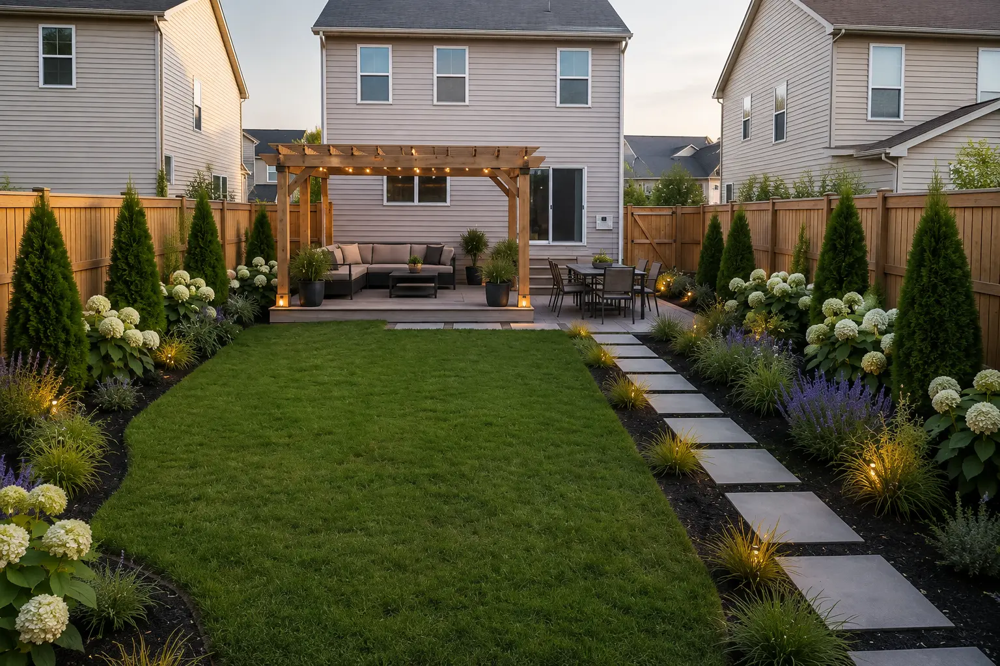
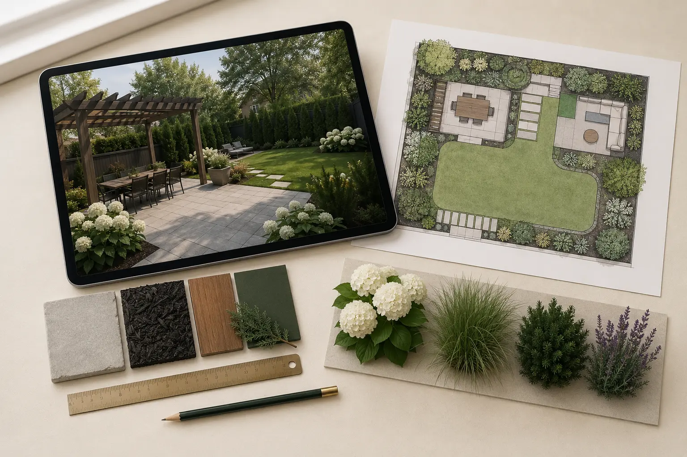

Open center
The middle remains available for play, pets and future flexibility.
The goal was not to fill the lawn. It was to create somewhere to sit, dine and move without sacrificing the flexible center.

The concept adds function around the edges instead of consuming the center.

The right image is a visual concept for planning. It is not a photograph of completed construction or installation.
The open center, house access and existing boundaries controlled the solution.
The middle remains available for play, pets and future flexibility.
Dining remains near the door instead of being pushed to the far boundary.
Planting and privacy occupy the edges where they do not fragment use.
Movement between door, lawn and activity zones stays obvious.

The strongest move was to resist adding features to every available patch of lawn.
Outdoor rooms are defined by use, connection and realistic movement—not decoration alone.
Food and furniture move through the nearest door without crossing the full yard.
A quieter secondary zone gains identity without blocking the main route.
Planting softens edges, supports privacy and protects open ground.
Concepts support better choices; they do not replace construction drawings, engineering or contractor verification.

Before physical work, verify property lines, utilities, drainage, structure, fire-feature clearances, local codes and product requirements with qualified local professionals.
This page documents an AI-assisted digital design concept. It does not claim that Orlano Gardens installed the project or that the concept represents completed construction.
Share clear photos and priorities so the correct scope can be confirmed before Etsy checkout.